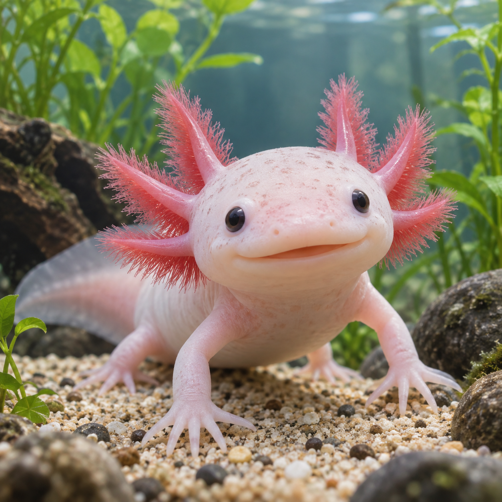

Axolotls are salamanders that never really grow up. Most salamanders lose their gills and crawl onto land as adults, but the axolotl keeps its larval body its entire life and stays in the water, a trait scientists call neoteny. Here is a fun fact about axolotls; they can regrow a lost leg, its tail, parts of its spinal cord, and even portions of its heart and brain, with no scarring at all. That is why researchers study them so closely. In the wild they live in the canals of Lake Xochimilco near Mexico City and they are critically endangered. However, thousands live happily in labs and home aquariums.
Wild axolotls survive in only a few canals in Mexico City, and that habitat has been steadily degraded by urban sprawl, water pollution, and non-native fish like tilapia and carp that eat axolotl eggs and young. The IUCN classifies the species as Critically Endangered, with an estimated 50 to 1,000 adults left in the wild.
Most people picture axolotls as pink, but that is really just one variety. Wild axolotls are usually a mottled brown or dark olive, which keeps them hidden on the bottom of a canal. Breeders have also produced golden, white, and dark melanoid axolotls, and the dark ones can look almost blue-gray under aquarium lighting.
Want to read more about them? Check out the Axolotl page on Wikipedia.